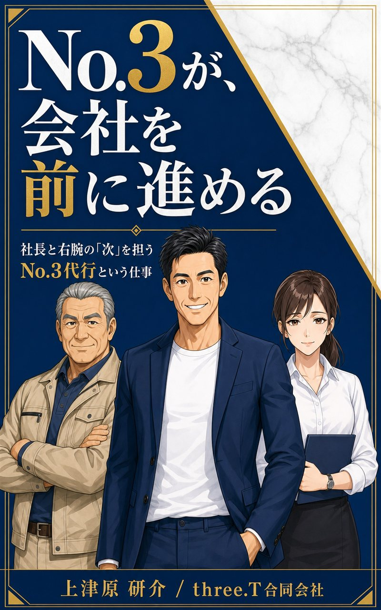

やりたいことはある。
でも、進まない。
構想が日常業務に埋もれている
詳しく見る →01 — THE BOTTLENECK
日々の判断と緊急対応に追われるほど、会社の未来に必要な仕事は後回しになります。問題は、やる気ではなく「推進する人」と「進む仕組み」が足りないことです。
構想が日常業務に埋もれている
詳しく見る →判断を理解し、実行まで担う人がいない
詳しく見る →欲しい人材に届かず、採用活動も回らない
詳しく見る →ツール導入で止まり、現場に定着しない
詳しく見る →既存業務が優先され、責任者も不足している
詳しく見る →何から始め、どう業務に組み込むか分からない
詳しく見る →なぜ、後回しになるのか
「緊急で重要」に手を取られ、会社の未来をつくる右上のゾーンが後回しに。
そこを前に進めるのが、No.3代行の役割です。
BEFORE → AFTER
社長と右腕だけ
物事が進まず、停滞している状態。
No.3代行が参加
三位一体で、会社が前進する。
02 — FROM STUCK TO SCALE
STUCK
売上、採用、DX、新規事業。重要なテーマほど、目の前の業務に押し戻されます。
CLARIFY
対話から本当に取り組むべき課題を特定し、優先順位・担当・期限を明確にします。
EXECUTE
必要な実務を推進しながら、業務フロー、ツール、役割分担を整えます。
SCALE
現場が自走し、経営者は次の意思決定に集中できる状態をつくります。
03 — WHAT IS NO.3?
点と点を繋げると、線が生まれる。そこに3つ目の点を加えると、はじめて「カタチ」になる。three.Tはその3つ目の点として、経営参謀の視点で課題を整理し、現場で実行できる形に翻訳します。必要な時は自ら手を動かし、最終的には社内で回る仕組みに変えます。
社長と右腕だけでは、関係は「一本の線」。切れたら、支えを失います。
そこにNo.3という3つ目の点が加わると、組織は三角形になり、驚くほど安定します。
頭の中にある課題と構想を言語化し、優先順位を決める。
計画だけで終わらせず、必要な実務と調整を推進する。
属人的な動きを、社内で継続できる状態に変える。
現場の声は、まっすぐ届かない
No.3代行は、社長と現場の“あいだ”に入り、このフィルターをなくす。
現場の本音が、まっすぐ社長に届くようになります。
04 — SERVICES
支援の中心は「売上」「仕組み／DX」「人材」の3領域。経営全体を見ながら最適な打ち手を実行します。カードを選ぶと詳細が開きます。
05 — HOW WE MOVE
TALK
現在の状況、止まっているテーマ、理想の状態を伺います。
DESIGN
優先課題、支援範囲、進め方、費用を明確にします。
MOVE
定例と実務推進を通じて、重要課題を前進させます。
SYSTEMIZE
業務フローや役割を整え、社内で継続できる状態へ。
支援範囲と連絡ルールを事前に明確化し、双方にとって健全で継続可能な体制を設計します。

06 — PUBLICATION
『No.3が、会社を前に進める』社長と右腕の「次」を担う No.3代行という仕事
「社長と右腕の二人で、なんとか回している」——それでも会社が前に進まない。その正体は“3番目”の不在です。ある町工場の物語を通して、No.3という役割の力と、No.3代行という働き方をやさしく解き明かす一冊。「No.3代行ってどんな仕事？」がまるごと分かります。
07 — EXPERIENCE
大手機械メーカー
SALES / PLANNING旅行会社
OPERATIONS / BUSINESS独立・経営支援
ENTREPRENEURSHIP支援企業
CLIENT PARTNERS
08 — FOUNDER
大手機械メーカーで営業9年・営業企画3年、旅行会社8年、独立6年。大手企業での営業・企画経験と、独立後の中小企業支援を通じて、経営参謀として経営者の構想を具体的な行動へ変える役割を担ってきました。
「緊急ではないが重要なことを、前進させる。」
09 — REPRESENTATIVE BLOG
経営、AI活用、複業、挑戦の記録。代表・上津原がnoteで日々の気づきを発信しています。
主に社員10〜100名程度の中小企業を対象としています。経営者の構想はあるものの、推進する人材や時間が不足している企業に適しています。
提案だけで終わらず、必要な実務、社内調整、仕組み化まで伴走する点が異なります。
はい。初回相談で状況を整理し、優先して取り組む課題から一緒に決めます。
可能です。単発支援、プロジェクト支援、継続伴走など、課題に合わせてご提案します。
支援範囲と関与頻度に応じて個別にお見積りします。初回相談後、ご契約前に内容と費用を明確にご提示します。
はい。オンラインを中心に全国対応しています。必要に応じて訪問対応もご相談いただけます。
いいえ。初回相談では課題整理を行い、three.Tがお役に立てる場合のみ支援内容をご提案します。
11 — LET'S MOVE FORWARD
止まっている課題を整理し、次の一歩を一緒に決めます。
まずは60分、経営の「進まない」をお聞かせください。